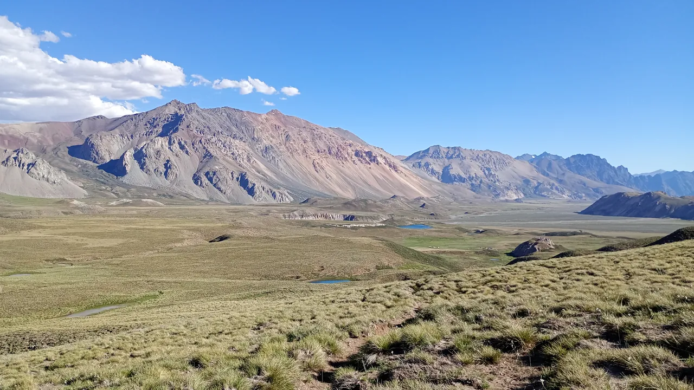

Expedición
Trekking y ascensos en Mendoza y el norte argentino
Explorá travesías al Avión de los Uruguayos y las lagunas del sur mendocino, ascensos al Cerro Nevado y Payún Liso, y trekking en Iruya y Tafí del Valle. Consultá la duración, temporada e itinerario de cada expedición.